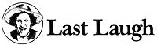

If you pick up a starving dog and make him prosperous, he will not bite you. This is the
principal difference between a dog and a man.
-Mark Twain
Well sir, though it ain't got cold enough yet to make the ticks quit the woods, fall seems to be lookin' over the ridges here at Plumtree Crossin'. An' whilst I hate the thought of puttin' in an honest day's work as much as the next man (an' probably a clang sight more'n most!), my woodpile has got to the point where it won't take "no" fer an answer.
So I guess it's downright providential thet I was rummagin' through my closet a few days ago-tryin' to locate my long-handled underwear-an' come across a letter from of Bill Bragg Jr., from up by Casper, Wyoming. 01' Bill-fer those of you who haven't heered of him-is a downright prolific raconteur an' prevaricator (why, sometimes I don't even know iffen I can believe his name), with a passel of books to his credit.
In this particular missive, though, he wanted to pass along a story by another feller from up in the Equality State, a tale what Mr. Bragg hisself has been known to relate at such august gatherin's as the Wyoming Mining Association's annual meetin's. So, whilst I'm out back tryin' to figger how to get a wedge through some of that dadburned curly-grained sweet gum, you folks can set back an' enjoy the followin' story. I'll jist let Bill introduce it to you the same's he did in his letter to me.
* * *
A newspaperman named Bill Nye in Laramie in the 1870's turned into a would-be miner and went prospecting in one of the many booms that flared up in that area from time to time. He wrote an essay on his dog, and I have always liked it.
Some dogs are prized for their faithfulness, others for their sagacity, and still others for their beauty. My dog was not noticeable for his faithfulness, because he only clung to me when I did not want him, and when I felt lonely and needed sympathy and deep devotion, he was always away from home.
He was not very sagacious, either. He was always doing things which, in the light of chastened experience and cooler, calmer afterthought, he bitterly regretted. Thus, his life was a wide waste of shattered ambitions and the ghastly ruins of what he might have been.
Neither did I prize him for his beauty, for he was brindle where there was any hair on him and red where there was none, and he had, at one time, dropped his tail into a camp kettle of boiling water, so that when he took it out and looked at it sadly, he was surprised to see that it looked like a sausage.
When visitors came to my camp at the Boomerang Consolidated and I gave them lunch, my dog would sit near them and look yearningly at them, and pound the floor with his bald-headed tail, and lick his chops, and follow each mouthful of the lunch with such a hungry, hopeless look that the visitors wished that they were dead.
When I first went out to the mining camp, I did not have any dog. I was not poor enough. After a while, however, by judicious inactivity and my aesthetic love for physical calm, I got poor enough. So that I knew I ought to procure a dog, and thus herald my poverty to the world. I also desired a constant companion who would share my humble lot and never forsake me.
I secured a dog, which I named Entomologist. Do you know what an Entomologist is? He is one who makes large collections of antique bugs and pecular insects, and studies their characteristics and peculiarities. Entomologist seemed to be entirely wrapped up in his collection of insects, and they were very much attached to him. He had a good many more insects on hand than he really needed, especially fleas. Entomologist introduced into Slippery Elm Gulch a large, early, purple-top, Swedish flea that had an immense run in camp. Most everybody got some of them. He was very proud of his collection of singular and peculiar fleas. It was about all he had to be proud of, except his appetite.
Entomologist had a wild, ungovernable desire for food that made him a good deal of trouble. He would keep his unnatural appetite under control for days and weeks together, and then he would yield to it and become its willing slave again.
He would eat too much during the day, and at night he would creep into my tent and fill the air with his vain regrets. I used to try every way to make him overcome his corroding grief, and at last I got to throwing pick handles and drills and packsaddles and large chunks of specimen quartz and carboniferous profanity at him in the night, to see if I couldn't convince him that it was better to suffer on in silence and smother his woe than to give away to such wild and robust grief.
One night he did not come home, and I feared he had fallen down the shaft into the lower level of the Boomerang. I found him, however, down at Dobe Abraham's, trying to eat a twenty-five-foot rawhide lariat. It seems he had swallowed fifteen feet of it before he discovered that the other end was tied in a hard knot to an iron picket pin. When he discovered this, he had moved to reconsider, but the motion was defeated. I untied the lariat, however, and let Entomologist swallow it and go home. Then I went to the owner and purchased the lariat. I had one at home just like it, but I thought that it would be as well for Entomologist to have one of his own. I would do anything for my dog. I did not wish to neglect him while he was alive, for I knew I would regret it some day, if he were to be taken from me.
One day in the mellow autumn, I went over to town to purchase grub for the winter and took Entomologist with me. He ran around a good deal and tasted almost everything; but he knew his weakness and did not yield to it [at] first. Finally, he found some soft plaster of paris that had just been mixed near a new home. He had eaten a good many things, but he had never tasted plaster before, so he ate what there was.
It was the effect of a blind impulse, and not the result of Entomologist's more mature judgment. Ah, how rashly the best of us sometimes fly into the face of Providence, and in later years we struggle in tears and agony of spirit to overcome the foolish action of an unguarded moment.
That's the way it was with Entomologist. Five minutes after he ate that plaster, he felt as though years of integrity and self-denial could not overcome this rash act. He lost his old vivacity and never came up to me any more to lick my face with his warm, damp tongue or put his cool, wet nose in my ear and sneeze, as he was wont to do when he was well. He gradually lost all interest in his fleas and allowed them to shift for themselves.
Although he did not moan or complain, I could see that little Entomologist was climbing the golden stair. One day, just as the sun was lighting up the west and glorifying the horizon with its royal coloring, Entomologist rolled up into a small, globular wad, and died. He died without a struggle, but I always knew that he would die easy. If it hadn't been easy, he wouldn't have done it. He never would do anything that was difficult or required a struggle.
As I write these lines, memory takes me back to those days of the long ago; and while the scalding tear wells up anon to my eyelids and falls upon the pages before me, a large paperweight, white and symmetrical, is lying by my side, and on it is written:
Plaster cast of Entomologist
Taken by himself (interior view),
He bit off more than he could chew .
EDITOR'S NOTE: Bill Bragg, author of Wyoming: Wild and Wooly, is a well-known western writer. His two upcoming books, scheduled for publication in 1985, are Wyoming: Some Bad Men and Worse Women and A Cavalcade of Cowmen.
|
 |
|
|